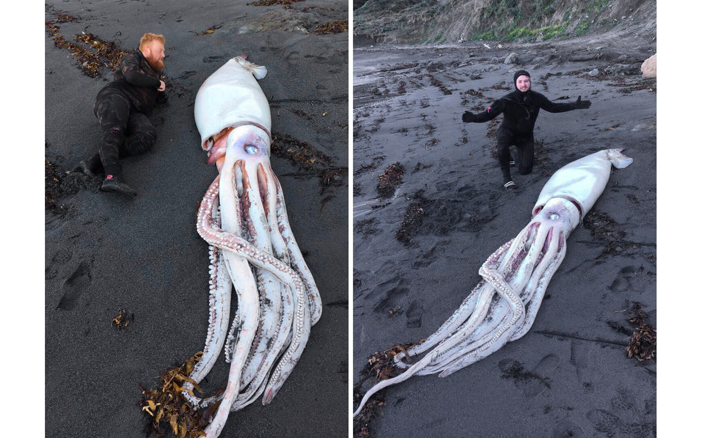
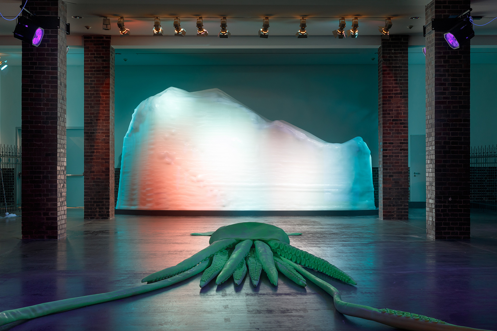
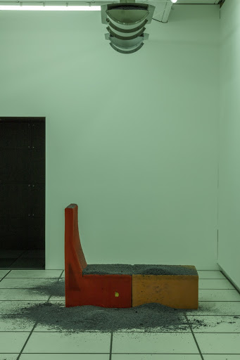
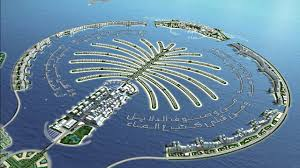

1. George Henry Durrie and First Reformed churches: the church representing social/historical change by its stubborn lack of change.
2. Cyprien Gallard's hologram (2) of Max Ernst's "L'Angue du Foyer" (1) for the 2019 Venice Bienalle, posted on Youtube by Анна Коломиец (3) to a melodramatic tune. "Ernst’s goal was to depict the chaos that he saw spreading over Europe and the ruin that fascism brings to countries." Few narrative traces in the image reproduced, fewer in the reproduction reproduced. Somehow the excessive intensity is there in all three iterations, but to what end?
3. January, 2019. squid versus davy jones COMPARE TO DAVY JONES FROM PIRATES OF THE CARIBEAN. Throughout history the Giant Squid has eluded human conception, and as a result it feels in opposition to the human, even pathological. Yet we are obsessed with it, proven by its popularity on the internet, in myth, and in science. The squid finances a cultural production of fantasy; we imagine its alien habitat: cities of blue coral and silence. As it evades us, it conjures an undiscovered landscape of potential significations: Bunny Rogers explains, “thinking of the ocean as … outer space on earth [is] the closest we can come to experiencing a different world.”
The Giant Squid is rarely seen alive. More often it is lifeless-- glowing pale-white like a ghost, shiny, 8 rubbery arms stretched across wet sand. Its big beautiful eye rolled into its head: dead. Its death might draft a negative for the elicit fantasy in the paragraph above, or for the apparitional beauty of the unknown. Bunny Rogers “Creepy Crawler (Giant Squid)” (2018) compares the dead squid to a childrens toy in a 35ft sculpture made of glow-in-the-dark rubber. Like a toy, a Google image of a beached squid might have shaped my generation's ‘imagery space’ (in the perceived deep sea); wide-eyed kids might've placed their earliest apprehensions there.
 4. December, 2019. The history of Ash compared Verner Panton's design. “Year without summer (Panton’s Diversion)” (2017) by Dora Budor is a distilled environment wherein artificial ash falls from the ceiling onto Verner Panton’s 1965 design series ‘Wohnlandschaft’. The title alludes to the year of 1816, known as “the year without summer”-- the ‘nuclear winter’ which led to massive death tolls across the Northern Hemisphere, caused by the largest known volcanic eruption of 1,300 years. Meanwhile, high levels of ash in the atmosphere led to unusually spectacular sunsets. Such force demonstrates the subliming violence of nature. In 1816 it starved children, and JMW Turner discovered his oeuvre.
Ash signifies that distant threat. In the historic incident of Pompeii it was at once the preserver of intellectual beauty and the hand of death: halting and elongating the chronological order of time. Atop ‘Wohnlandschaft’, it marks the constant metamorphoses of visual histories. Ash serves as an indicator of the cycle of erasure in which Panton’s 'futurism' is taken from utility and placed into history: out of Bauhausian living rooms and into the sterile vacuum of climate-controlled design archives. Design is agentless in the reification of new modernities. Yet ash is an agent-- a speculative driver in the displacement of history.
5. The physical construction of islands (PRC in South China Sea, Dubai) and the literary construction of islands (Plato's Atlantis, more recently, Meriem Bennani's Party on the Caps): an attempt to quantify unquantifiables (the ocean, emotional turmoil, political ownership). Islands produce mental-bridges between massive, incomprehensible ideations (like the sea).
6. Bram Stoker's Dracula compared to the Phaedrus
7. Walter Benjamin and Benjamin Clawhauser